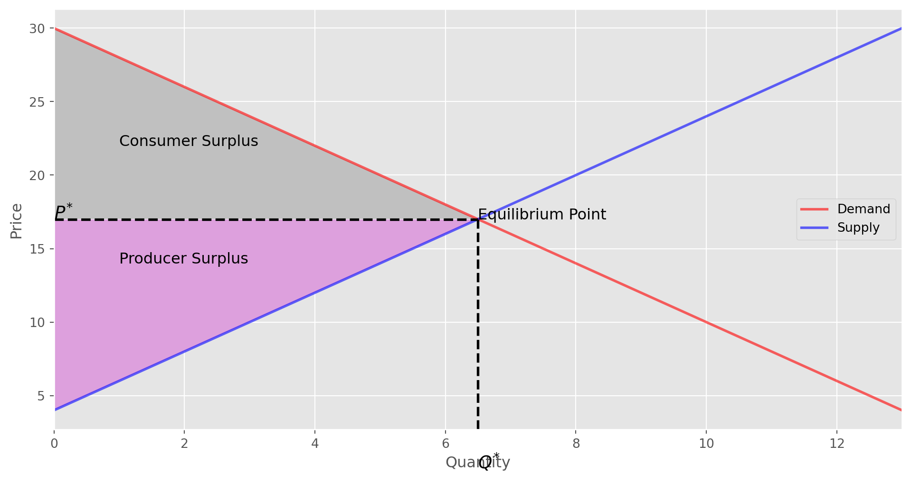

import numpy as np
import matplotlib.pyplot as plt
from scipy.integrate import quad
from matplotlib.path import Path
from matplotlib.patches import PathPatch
plt.style.use("ggplot")Introduction
In this blog, I want to review simple one good market economy, where supply and demand are linear functions of price and agents of this economy are price takers. Those agents are divided into two categories: buyers and sellers. The price of a product is determined by the interaction of demand and supply or in other words buyers and sellers. Here, the buyer is associated with demand and seller is associated with supply. Henceforth, in this market, there are no frictions or market imperfections (more on this later) and market is competitive. So, this should be a very simple environment, where buyer demands product and seller sells this product at a given price. Before continue, it’s worth to define some key terms and notions in our simple market model.
First, let’s start by defining what is economics. In simple words, economics is the social science which studies production, consumption, and distribution of goods and services. I used, three main terms above, which constitutes our simple economy: demand, supply, and price.
Demand is all the quantities of good or service that buyers are willing and able to buy at all possible prices.
Demand is based on needs and wants. From the consumer point of view, we all know the difference but from an economist’s perspective, they are the same. Moreover, demand is based on the ability to pay, If the agent cannot afford to pay, they have no effective demand.
The law of demand states that a higher price leads to a lower quantity demanded and a lower price leads to a higher quantity demanded
Make it simple, low of demand says that there is an inverse relationship between price and quantity demanded and this relationship determines downward sloping demand curve.
Supply is all the possible quantities that sellers are willing and able to produce at all possible prices.
When an economist talks about to supply, they mean the amount of some good or service a producer is willing to supply at each price. Price is what the producer receives for selling one unit of good or service.
The low of supply states that a higher price leads to a higher quantity and lower price leads to lower quantity supplied.
Low of supply says that there is positive relationship between price and quantity supplied, leading to an upward sloping supply curve.
I mentioned earlier that our market is competitive and in competitive market demand for good or service and supply will determine the price. This price is the equilibrium price.
Equilibrium price is the price for which quantity demanded and quantity supplied are equal.
In our market settings, equilibrium occurs when the price has adjusted until the quantity supplied is equal to quantity demanded. When this equality is violated market experiences disequilibrium. When a market is experiencing a disequilibrium, there will be either a shortage or a surplus.
When the price is above the equilibrium price, this produce surplus, which encourages sellers to lower their prices to eliminate the surplus.
At any price below the equilibrium price, the shortage will exist, which leads to the price of the good increasing.
Model
At that moment we defined all the necessary terms and notions in our simple economy to continue our analysis and modeling. Now, it’s time to ask ourselves. Can we model mathematically this economy and see the dynamics of the buyers and sellers? Yes, we can do and we can go farther and make a simple Python script to make simulations in this economy.
Let’s start our modeling part with defining functions for demand and supply. Logically, demand and supply are generated from some very complicated function and its real anatomy is unknown, but as we are in simple economy we can assume that they are linear functions of price:
A liner demand curve:
\[ Q = a - b\cdot p \]
A linear supply curve:
\[ Q = c + d\cdot p \]
Here, \(p\) is the price paid by the consumer and \(Q\) is the quantity. \(a\), \(b\), \(c\), and \(d\) are demand and supply parameters.
Let first solve this mathematically. We have the equation for quantity and the parameters \(a\) and \(b\) are predetermined, or we can choose their value. We know that in equilibrium, quantity demanded and quantity supplied are equal. So, by equating our equations and doing some simple algebra we’ll get equilibrium price. Let denote this price by \(P^{*}\).
\[ a - b\cdot p = c + d\cdot p \Rightarrow \\ \\ \Rightarrow d\cdot p + b\cdot p = a - c \\ \\ \Rightarrow P^{*} = \frac{a - c}{d + b} \]
By having \(P^{*}\) we have equilibrium price. Now, let me introduce some new notions, which are very natural in this market economy, such as, consumer surplus, producer surplus, and social surplus.
Consumer surplus is the gap between the price that consumers are willing to pay and equilibrium price.
Producer surplus is the gap between the price for which producers are willing to sell a product and market equilibrium price.
Social surplus is the sum of consumer and producer surplus.
To calculate these values, first, we need to calculate inverse demand and supply function. Inverse demand function considers price as a function of quantity. We have quantity as a function of a price, hence we need to find its inverse.
We have a linear demand curve, given by
\[ Q = a - b\cdot p \]
Let change the notation a little bit and denote demand function in the following way:
\[ Q(p) = a - b\cdot p \]
To find the inverse of this function we have to solve the above function for \(p\). Doing simple algebra, yields
\[ p = \frac{a - Q}{b} \]
and this is the same to write
\[ p(Q) = \frac{a - Q}{b} \]
Doing the same for supply, we easily find inverse supply function, given by
\[ p(Q) = \frac{Q - c}{d} \]
Consumer surplus is the area under inverse demand function and producer surplus is the area above inverse supply function. This may not be clear but after plotting demand and supply curves it will be understandable, what is consumer and producer surplus and how to calculate them. For general sense, we need integrals of inverse demand and supply functions to calculate surplus. See the link for more information.
As we have all the necessary information and equations, we can start to code these equations in Python. I’m going to write a simple Python class, which will calculate equilibrium price and quantity, consumer and producer surplus.
class Market:
def __init__(self, a, b, c, d):
self.a = a
self.b = b
self.c = c
self.d = d
if a < c:
raise ValueError("Insufficient demand!")
def price(self):
"""Returns equilibrium price"""
return (self.a - self.c) / (self.d + self.b)
def quantity(self):
"""Returns equilibrium quantity"""
return self.a - self.b * self.price()
def inverse_demand(self, x):
return (self.a - x) / self.b
def inverse_supply(self, x):
return (x - self.c) / self.d
def consumer_surplus(self):
integrand = lambda x: (self.a - x) / self.b
area, error = quad(integrand, 0, self.quantity())
return area - self.price() * self.quantity()
def producer_surplus(self):
integrand = lambda x: (x - self.c) / self.d
area, error = quad(integrand, 0, self.quantity())
return self.price() * self.quantity() - areaLet, test our model with some base line parameters.
a = 15
b = 0.5
c = -2
d = 0.5
m = Market(a, b, c, d)print("Equilibrium Price = ", m.price())
print("Equilibrium Quantity = ", m.quantity())Equilibrium Price = 17.0
Equilibrium Quantity = 6.5print('Consumer Surplus =', m.consumer_surplus())
print('Producer Surplus =', m.producer_surplus())Consumer Surplus = 42.25
Producer Surplus = 42.25Let plot inverse demand and inverse supply curves and shade consumer and producer surplus area.
q_max = m.quantity() * 2
q_grid = np.linspace(0.0, q_max, 100)
pd = m.inverse_demand(q_grid)
ps = m.inverse_supply(q_grid)
fig, ax = plt.subplots(figsize=(12, 6))
ax.plot(q_grid, pd, lw=2, alpha=0.6, label="Demand", color="red")
ax.plot(q_grid, ps, lw=2, alpha=0.6, label="Supply", color="blue")
ax.axhline(17, 0, 0.5, linewidth=2, color="black", linestyle="dashed")
ax.axvline(6.5, 0, 0.5, linewidth=2, color="black", linestyle="dashed")
path1 = Path([[0, 17], [0, 30], [6.5, 17], [0, 17]])
patch1 = PathPatch(path1, facecolor="silver")
ax.add_patch(patch1)
path2 = Path([[0, 4], [0, 17], [6.5, 17], [0, 4]])
patch2 = PathPatch(path2, facecolor="plum")
ax.add_patch(patch2)
ax.text(6.5, 17, "Equilibrium Point", fontsize=12)
ax.text(1, 22, "Consumer Surplus", fontsize=12)
ax.text(1, 14, "Producer Surplus", fontsize=12)
ax.text(0, 17, "$P^{*}$", fontsize=14)
ax.text(6.5, 0, "$Q^{*}$", fontsize=14)
ax.set_xlabel("Quantity")
ax.set_xlim(0, q_max)
ax.set_ylabel("Price")
ax.legend(loc="best");
In the above graph, we see the equilibrium point. We can ask the following question. What will happen to the equilibrium price and quantity if demand or supply curve shits? Let make a table and summarize the changes in equilibrium due to changes in supply and demand curve.|
| Change | Change in\(P^{*}\) | Change in\(Q^{*}\) |
|---|---|---|
| Supply increases | \(P\) \(\Downarrow\) | \(Q\) \(\Uparrow\) |
| Supply decreases | \(P\) \(\Uparrow\) | \(Q\) \(\Downarrow\) |
| Demand increases | \(P\) \(\Uparrow\) | \(Q\) \(\Uparrow\) |
| Demand decreases | \(P\) \(\Downarrow\) | \(Q\) \(\Downarrow\) |
| Demand increases, Supply increases | \(P\) \(\Updownarrow\), \(\\(indeterminate)\) | \(Q\) \(\Uparrow\) |
| Demand increases, Supply decreases | \(P\) \(\Uparrow\) | \(Q\) \(\Updownarrow\), \(\\(indeterminate)\) |
| Demand decreases, Supply increases | \(P\) \(\Downarrow\) | \(Q\) \(\Updownarrow\), \(\\(indeterminate)\) |
| Demand decreases, Supply decreases | \(P\) \(\Updownarrow\), \(\\(indeterminate)\) | \(Q\) \(\Downarrow\) |
From the above table, we see that in some cases due to the simultaneous changes in supply and demand we cannot determine equilibrium price or quantity movement. That’s the case when other factors are in consideration, but these factors are out of the scope for this blog.
Conclusion
To sum up, we saw how to model simple one good competitive market both mathematically and programmatically. This simple economy model is a building block of more complex models. I do hope you gained some understanding of building economic models. If you feel ambitious you can introduce government tax in this model and calculate supply with and without tax as well as a deadweight loss by imposing government tax and see graphically how the tax affects the supply curve.